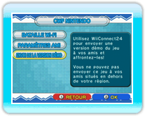
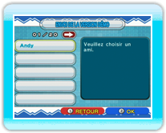
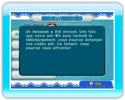
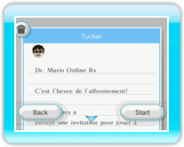

19 |
Envoyer la version démo (Dr. Mario) |
 |
|
Vous pouvez envoyer une version démo du jeu à des amis n’ayant pas acheté Dr. Mario Online Rx. Avant l’envoi, assurez-vous que WiiConnect24 est correctement paramétré (voir page 18). NOTE: la version démo ne peut être utilisée que pour des batailles en ligne contre un ami ayant la version complète du jeu. Si les deux joueurs ont la version démo, il sera impossible de jouer. Vous aurez besoin de votre code ami pour envoyer la version démo. Vous pouvez consulter votre code ami dans le menu CWF Nintendo de Dr. Mario en sélectionnant PARAMÈTRES AMI puis CONFIRMER VOTRE CODE AMI. You will need your own friend code to send the version. You can check your friend code by navigating to the Nintendo WFC menu in Dr. Mario, selecting Friend Settings, and then selecting Confirm Friend Code. ● Envoyer la version démo

Allez dans le menu CWF Nintendo et sélectionnez ENVOI DE LA VERSION DÉMO.

Lorsque votre carnet d’adresses s’affiche, choisissez l’ami Wii à qui vous souhaitez envoyer la version démo.

Une fois la version démo envoyée, une confirmation s’affichera. NOTE: vous ne pouvez pas envoyer la version démo à des amis Wii dont la console Wii n’est pas paramétrée sur le même pays que la vôtre, ou à des amis Wii n’ayant pas de code Wii. 
● Recevoir la version démo NOTE: seule la personne possédant la version complète de Dr. Mario Online Rx peut inviter l’autre personne. Les paramètres et les résultats ne seront pas sauvegardés. |
 |
 |